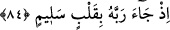
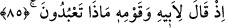
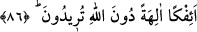
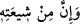

üzereydi. Yahut İbrahim (a.s.) Allah’ın dininde dik duruş sergilemede ve tekzipçilere
karşı sabredip direnmede Nuh (a.s.)’a tâbi olanlardandır. Nuh (a.s.) ile İbrahim (a.s.)
arasında yalnız Hûd (a.s.) ve Salih (a.s.) vardır. Yine Nuh (a.s.) ile İbrahim (a.s.)
arasında 2640 sene vardır. Bazı tefsirlerde der ki, burada “ deki zamir ( )
)
Hz. Peygamber (s.a.)’e gider. Her ne kadar burada Peygamber (s.a.) zikredilmemiş ve
İbrahim (a.s.) da sûreten Peygamberimiz (s.a.)’den önce ise de hakikatte İbrahim (a.s.)
Rasûlullah (s.a.)’e tâbidir. Bundan dolayı İbrahim (a.s.) Peygamberimiz (s.a.)’in
üstünlüğünü itiraf etmiş; onun dinini övmüş ve ona şöyle dua etmiştir: “Ey Rabbimiz!
Onlara, içlerinden senin âyetlerini kendilerine okuyacak, onlara kitap ve hikmeti
öğretecek, onları temizleyecek bir peygamber gönder. Çünkü üstün gelen, her şeyi
yerli yerince yapan yalnız sensin.” (el-Bakara 2/129).
Önceden çok peygamberler geldi ve Sen
Gerçi en son geldin ama hepsinin önderi sensin
Halil İbrahim’in sofrası Senin sofranın tuzluğu hükmündedir
Istıfâ sofrası üzerinde ise peygamberlerin tuzu Sensin
84. Çünkü Rabbine kalb-i selim ile geldi.
“Çünkü Rabbine” kalbî âfetlerden ve Allah’tan başka dünya ve ahiret ile ilgili
durumlardan kurtulan “kalb-i selim ile geldi.”
İbrahim (a.s.)’ın rabbine kalb-i selim ile gelmesinin mânâsı, Allah’a karşı ihlaslı ve
samimi olmasıdır. Sanki temsili olarak İbrahim (a.s.) kalbini kucağına alıp Allah’a
götürmüştür. Yoksa kalB bir yerden başka bir yere götürülecek bir şey değildir.
85. Hani o, babasına ve kavmine: Siz kime kulluk ediyorsunuz? demişti.
“Hani o, babasına” yani Âzer b. Bâir b. Nahor b. Rau (Ergu) b. Fâlığ b. Şâlıh b.
Erfahşed b. Sâm b. Nûh’a ve putperest olan “kavmine: Siz kime kulluk ediyorsunuz?
demişti.” Buradaki istifhâm inkârîdir. Mânâ şudur: “Siz hangi şeye ibadet
ediyorsunuz?”